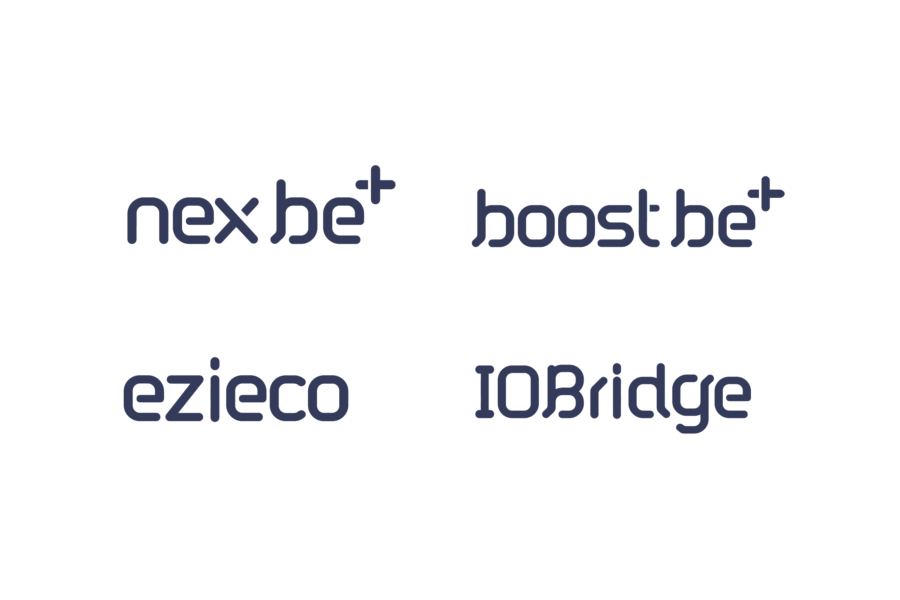
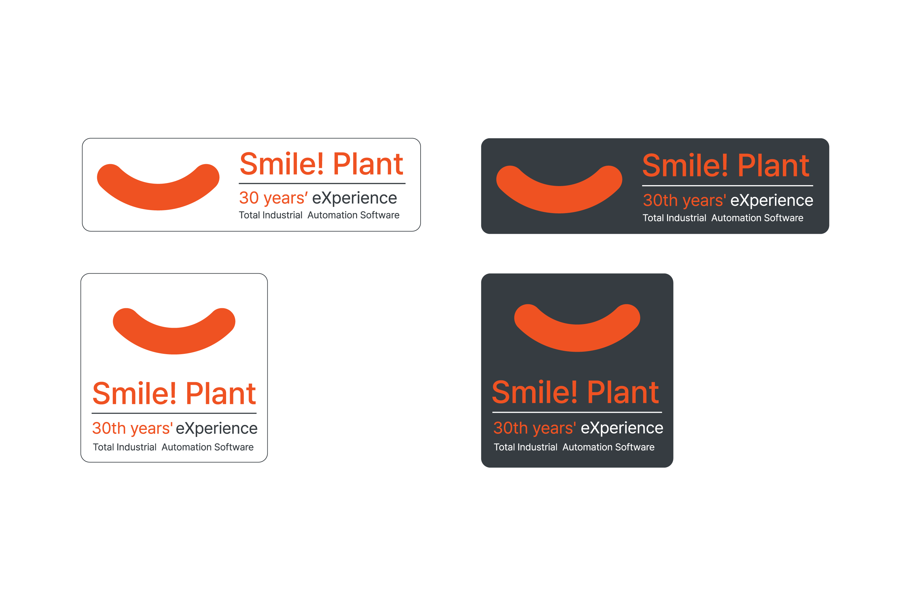
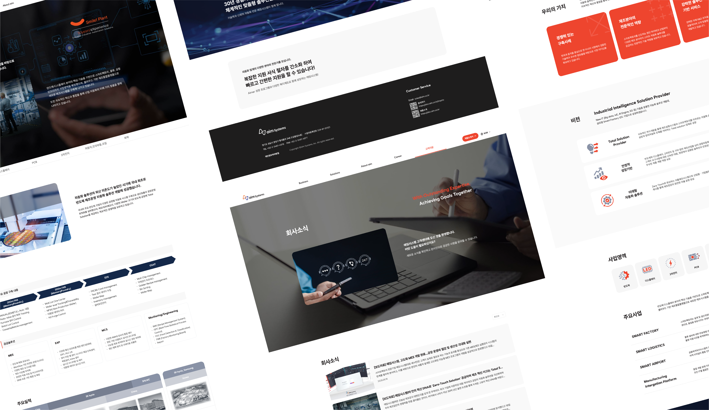

자사 제품 전체 리브랜딩
자사 홈페이지 리뉴얼

Overview
자사 제품 전반의 브랜드 리프레시와 함께 홈페이지·e-브로슈어를 전면 개편했습니다. 브랜드 네이밍/비주얼 아이덴티티 정비 → Figma 시안 → WordPress(Elementor) 기반의 반응형 퍼블리싱까지 일관된 흐름으로 진행해 시각 일관성과 콘텐츠 구조를 동시에 개선했습니다.
Role & Scope
- Lead Designer & Publisher (90%)
- 브랜드 톤앤매너/비주얼 시스템 수립(네이밍, 컬러, 락업 가이드)
- IA·페이지 플로우 설계, Figma 시안 제작
- WordPress + Elementor 템플릿 구조/글로벌 스타일 설계 및 퍼블리싱
- 마케팅용 산출물(웹/e-브로슈어) 디자인 및 문서화


Approach — Branding & Web
- Branding: 30주년 맥락을 반영해 라이트/다크 컬러웨이, 가로/스택형 락업을 정의하고 사용 가이드를 정리하여 접점별 일관성 확보.
- Content & IA: 핵심 메시지 중심으로 정보 구조를 재배치, 페이지 흐름과 컴포넌트 우선순위를 재정의.
- Web(Publishing): Elementor 글로벌 스타일·섹션/페이지 템플릿으로 재사용성을 높이고, 반응형 규칙을 표준화.
- Visual Consistency: 버튼/폼/카드 등 공통 컴포넌트를 규격화해 웹·e-브로슈어 간 룩앤필 통일.

Deliverables
- 브랜드 자산: 로고 락업(가로/스택), 컬러 팔레트(라이트/다크), 타이포·아이콘 스타일, 사용 가이드
- 웹 산출물: 30주년 맥락을 반영해 라이트/다크 컬러웨이, 가로/스택형 락업을 정의하고 사용 가이드를 정리하여 접점별 일관성 확보.
- 마케팅 자료:e-브로슈어(웹 기반), 회사 소개서 요약 문서

Outcome / Impact
- 접점 전반(홈/브로슈어/배너) 브랜드 일관성 강화
- 템플릿·글로벌 스타일 도입으로 페이지 확장·수정 효율 향상
- 반응형 규칙 정비로 모바일 가독성/완성도 개선